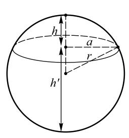

阿基米德是一个名副其实的怪人，离群索居，常常在深思中忘记吃饭，忘记洗澡，忘记往身上涂油（古希腊祭祀活动的要求）。人们不得不强迫他吃饭，抬着他去洗澡或者涂油，而这时阿基米德却不停地拿着水或油在自己身上涂画几何图形，继续思索。他是一个特立独行的人，一辈子只用叙拉古的希腊土话多利克语写作，然后以书信的方式寄给朋友和同好。他和埃拉托色尼是最为要好的朋友，他的大多数文稿都是寄给这位亚历山大里亚图书馆负责人的。亚历山大里亚和雅典在当时是影响最大的城市，人们都以讲雅典话或者亚历山大里亚话为荣。阿基米德的文字就好像今天的中国人用河南或山东地方方言写文章。可是他的文章追随者极多，因为其内容丰富，才华横溢。
如果说亚历山大里亚图书馆是合作研究的开端，那么阿基米德则是独立思考的典范。他一个人在叙拉古冥思苦想，把力学问题引入几何学，采用思维实验的方式，从物理学的角度考虑几何问题的解决方法，因而被尊为“现代科学之父”。他可能非常高傲自大。据说他给亚历山大里亚的数学家们写过一封信，列举了几十条数学定理，没有任何证明的细节。他在信上说，这里面有两条定理是错的，看你们能不能找出来！
在大多数几何学家仍然迷恋于二倍立方的时候，阿基米德已经转去研究更为复杂的三次方程了。他考虑过这样一个问题：把圆球切成两部分，使它们之间的体积之比等于一个事先给定的数值（图11）。
用现代的数学语言来说，就是给定两个半球的体积比mn，求这两个体积的高h和h′（注意h与h′之和等于圆球的直径）。经过一系列几何学的论证，阿基米德得到相当于如下的几何关系：

图 11：阿基米德的球体切割问题示意图。把球体从顶部向下在 h 的地方切开，使上下两部分的体积比为m ∶ n
h3-3h2r+4n/(m+n)r3=0（7a）
这里r是圆球的半径，h+h′=2r。显然，对于一个给定的半径r来说，这是一个关于h的三次方程。
怎样对这个方程求解呢？阿基米德首先把这个方程看成是下述方程的特例：
(r+h)/b=c2/(2r-h)2（7b）
这里b是一个具有长度单位的常数，c2是一个具有面积单位的常数。不难看出，如果 bc2=4m(m+n)r3，方程（7b）就回到了（7a）。但是（7b）仍然非常复杂。怎么办呢？阿基米德想出了一个非常聪明的办法。他看出方程（7b）里面有一个变数h和三个常数b、c、r。他说，好吧，让我找另外一个变数x，使它满足x = 2r-h。再为了使方程简单，让我用另一个常数a来替换r，使它满足a = 3r。这么一来，方程（7b）就变成了：
（a-x）x2 = bc2 （7c）
这比前面的两个方程看上去简单多了，不过它比二倍立方的方程（1）还是要复杂得多。这个方法我们今天常用。对于一些结构较为复杂、未知数（变量）较多的数学问题，我们经常引入一些新的变量去代换原来的变量，使得方程的结构变得简单，从而达到解决问题的目的。这种方法叫作变量代换法。
阿基米德发现，可以用两个圆锥曲线的交点来求得这个一元三次方程的解。为什么呢？
还是利用代数表述比较容易理解。如果a≠x（阿基米德感兴趣的是分割球体，h<r，x>r，这个条件是满足的），我们可以把（7c）写成：
x2=bc2/(a-x)（7d）
如果把这个等式的两边分别看待，它们各自代表了一条曲线。等式左边是抛物线y = x2，右边是双曲线y=bc2/(a-x)。当这两条曲线的y值相等的时候，我们就回到了（7a）。所以，（7a）的意思就是在xy平面上双曲线和抛物线的交点。
阿基米德通过几何作图得到的是抛物线 x2=(c2/a)*y和双曲线（a-x）y=ab。他已经知道，如果两条曲线相切，他可以得到一个正数解；或者相交，就有两个正数解；不相切也不相交，就无解。他花了大量时间对这个方程求解。那个时代还没有所谓“变量”和未知数的概念，也没有如同等式（7a）到（7d）这类的表达方式。跟其他的希腊学者一样，阿基米德是用尺规作图的办法，完全靠着一条条直线和曲线的复杂关系一步一步艰难地进行工作的。
然而，他平静的研究生活终将伴随叙拉古城命运的改变而改变。
罗马人围困叙拉古整整两年。叙拉古城池坚固，粮储充足，看起来双方要无限期地僵持下去了，这对在外作战的罗马人很不利。这期间，马克卢斯征服了西西里的大部分地区，把北非来的迦太基人杀得节节败退。叙拉古保卫战期间，一个名叫达密普斯（Damippus，生卒年不详）的希腊人在海上被罗马人捉去，此人是被叙拉古城派出去寻求援助的。为了把他赎回来，叙拉古多次同罗马谈判，而马克卢斯也得以借此机会进出叙拉古城。经过仔细观察，他终于发现有一座塔楼附近的城墙容易翻越，而那里的守军散漫松懈。老谋深算的马克卢斯甚至估算好了城墙的高度。
阿尔忒弥斯节到了，这是6月的神圣日，叙拉古全城都在为月亮、狩猎和处女之神庆贺，流水般喝酒、疯狂举行体育比赛和狂欢，就像雅典全盛时期一样。靠着夜幕的掩护，马克卢斯不费吹灰之力就占领了塔楼。从这里，士兵们悄悄地爬上城墙，打开城门。等到叙拉古人发现情况不妙时，罗马军的号角已经在全城吹响。叙拉古人大惊失色，以为大势已去，四散逃命。其实，当时叙拉古城的各个主要关口还掌握在叙拉古人自己手里。
黎明时分，马克卢斯从城门进入叙拉古。他站在城中的制高点，俯视这座美丽而宽阔的城市，百感交集，忍不住流下泪来。他知道，几个小时以后，这座城市将要变成一片废墟。这场战役实在赢得不易，罗马将士们对攻城时受到的挫折和羞辱耿耿于怀，个个咬牙切齿，只有将这座可恶的城市烧个一干二净，才能解心头之恨。马克卢斯没有忘记阿基米德，他命令士兵去请阿基米德，要把他带到罗马去。
阿基米德正在自己所画的几何图形前深深思索。面对罗马士兵滴血的短剑，阿基米德拒绝同行。或许他正在考虑他的一元三次方程吧，又或许那只是一个借口，他不愿意到罗马去效忠那个在他眼中十分野蛮的民族。不管真正的原因是什么，罗马士兵被他的“傲慢”深深激怒，便举起短剑，插入他的胸膛。
据说，倒在血泊中前，这位远远超过时代的奇人只说了一句话：
“不要碰我的圆。”
阿基米德死在罗马士兵手里，这个事件对世界的变化具有头等的象征意义：热爱抽象科学的古希腊人被现实且实际的罗马人赶下欧洲领袖的位置。古罗马人是伟大的民族，但他们因遭到诅咒而不育（作者案：指在科学上没有成就）。他们没有增进父辈的知识，他们的成就仅限于工程上的微小技术细节。他们不是梦想家，没能为更加根本地控制自然力量提供一个新视角。没有一个罗马人由于深深陷入对数学图像的思索而丢掉性命。
A.N. 怀海德（A. N. Whitehead，公元1861—公元1947）：《数学引论》（An Introduction to Mathematics）
你来试试看？本章趣味数学题：
1.验证等式（6a）。
2.通过等式（6g）证明外切球体的圆柱的体积是球体的2.5倍。
3.已知球体的体积是(3/4) π r3，这里r是球体的半径。你能利用这个知识计算球体表面的面积吗？
4.验证等式（7b）和（7c）是等价的。